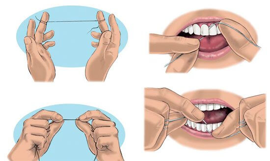

Flossing
Although some have questioned the benefits of cleaning between your teeth, using an interdental cleaner (like floss) is an essential part of taking care of your teeth and gums.
The American Dental Association recommends cleaning between your teeth once a day. Cleaning between your teeth may help prevent cavities and gum disease. Cleaning between your teeth helps remove a sticky film called plaque. Plaque contains bacteria that feeds on leftover food or sugar in your mouth. When that happens, it releases an acid that can eat away at the outer shell of your teeth and cause cavities.
Plaque that is not removed by brushing and cleaning between your teeth can eventually harden into a rough substance called tartar (or calculus). Tartar collects along your gum line and can lead to gum disease. Once tartar forms, only your dentist can remove it.
How to use dental floss
Dental floss is a thin, soft thread. If you find floss hard to use, you can try dental tape, which is thicker.
Don't be too aggressive with the floss: you risk harming your gums. The main action of flossing is a firm but gentle scraping of the tooth from the top down.
Your dental team can advise you about using dental floss.
Flossing tips
- Break off about 45cm (18in) of floss, and wind some around one finger of each hand.
- Hold the floss tightly between your thumbs and forefingers, with about an inch of floss between them, leaving no slack.
- Use a gentle "rocking" motion to guide the floss between your teeth. Don't snap the floss into the gums.
- When the floss reaches your gumline, curve it into a C-shape against one tooth until you feel resistance.
- Hold the floss against the tooth. Gently scrape the side of the tooth, moving the floss away from the gum. Repeat on the other side of the gap, along the side of the next tooth.
- Don't forget the back of your last tooth.
- When flossing, keep to a regular pattern. Start at the top and work from left to right, then move to the bottom and again work from the left to right. This way you're less likely to miss any teeth.
Being gentle
Poor flossing technique can result in complications, and it's important to be thorough yet gentle, especially when flossing with an electric flosser. Be sure you understand how to use it. You can always ask your dental professional to show you if you are uncertain.

Si usted ha perdido uno o más dientes, los implantes dentales son una excelente opción de tratamiento. La pérdida de dientes puede ocurrir por una variedad de razones como:

Dental implant is a prosthetic replacement for a missing tooth. Natural teeth consist of the crow and the root. The crown and the root. The crow is the visible section that is covered with white enamel. Supporting the crown is the tooth rot which extends into the jawbone. The root is the part of the tooth that is effectively replaced by an implant.

A dental implant is a prosthetic replacements for a missing tooth. Osseointegrated implants can be used to support prosthetic tooth replacements of various designs and functionality and are usually made to match the natural enamel color of each patient – which offers a completely natural appearance and whole new smile.